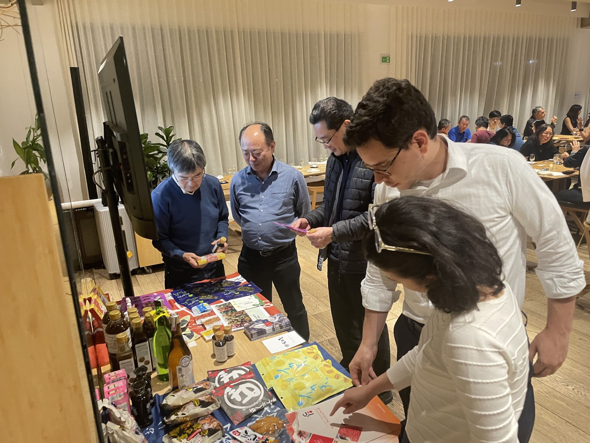
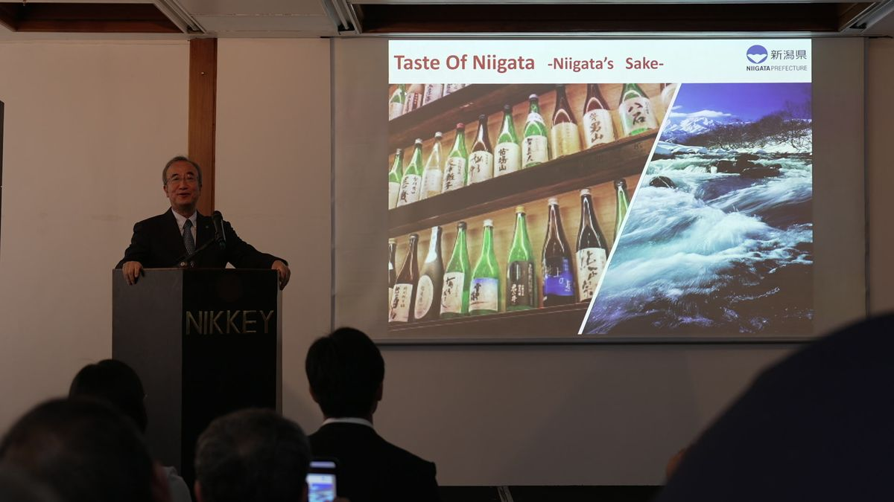
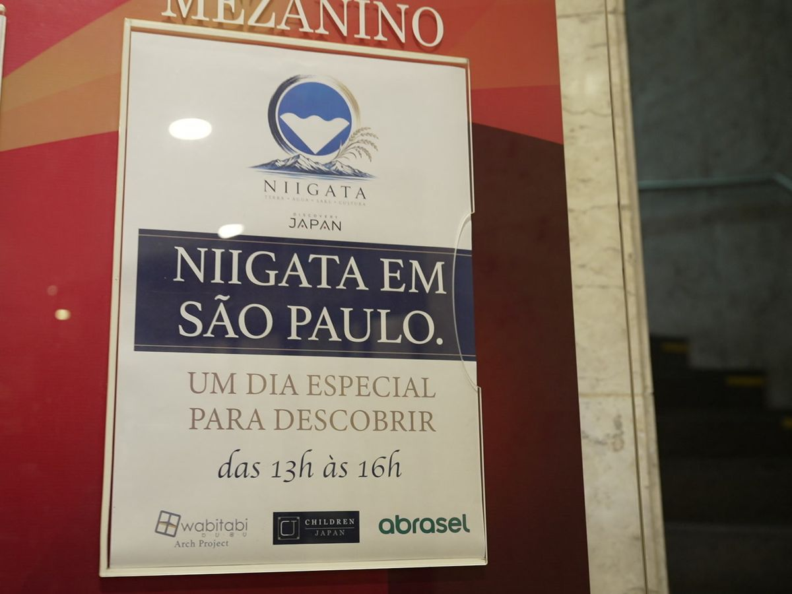

現地の反応、設計上の工夫、改善点を、自治体や企業が判断に使える知見として公開します。

現在公開中の活動レポートです。クリックすると childrenjapan.com の記事ページへ移動します。

2026年8月22日、サンパウロのNIKKEY PALACE HOTELで開催した新潟県産品の輸出促進イベントのレポート。新潟県・花角知事も登壇し、日本酒・米菓・和牛など県産品を紹介、現地の飲食・流通業界関係者120人余りが来場しました。

8月22日開催の商談会に先立つ事前案内。出展7社・提携ブランド9社の紹介と当日の流れをまとめた、バイヤー向けのバイリンガル（日本語・ポルトガル語）ガイドです。
対象、予算、時期が未定でも構いません。現在分かっていることと、まだ決まっていないことを整理します。